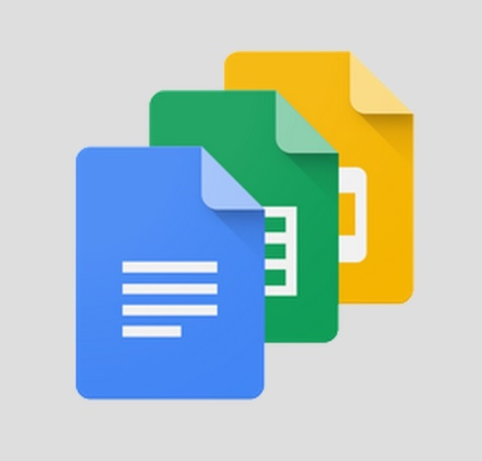

Dokumenty Google to pakiet biurowy, który oferowany jest bezpłatnie dla użytkowników indywidualnych i małych firm. Składa się z:
1. Edytora tekstowego – narzędzie Dokumenty
2. Arkusza kalkulacyjnego – narzędzie Arkusze
3. Kreatora prezentacji – narzędzie Prezentacje
4. Narzędzia do tworzenia formularzy – Formularze
Ponadto zapewnia dostęp do przestrzeni na dane w chmurze Dysk Google.
Aby skorzystać z Dokumentów Google należy posiadać konto na koncie Google i… to wszystko. Dostęp do narzędzi biurowych możliwy jest bez instalacji, bezpośrednio poprzez wyszukiwarkę. Ta cecha pakietu od Google jest wielką zaletą, ponieważ umożliwia szybkie i wygodne korzystanie z wszystkich jego zalet od ręki, w każdym miejscu i z niemal każdego urządzenia podpiętego do sieci. Oczywiście dostępna jest również aplikacja desktopowa oraz na urządzenia mobilne, która umożliwia wygodne korzystanie z pakietu, również w przypadku braku dostępu do internetu.
Większe firmy mogą skorzystać z możliwości wykupienia rozszerzonej wersji usługi, która dostarcza większej ilości pamięci w chmurze i dodatkowe narzędzia ułatwiające pracę wielu użytkowników jednocześnie (która nawet w podstawowej wersji jest wygodnie rozwiązana) i zwiększającej bezpieczeństwo. Ceny płatnych pakietów zawierają się w przedziałach 4-23 € za miesiąc dla jednego użytkownika, co oznacza że są tańsze od usług oferowanych przez Miscrosoft. Google nie posiada natomiast dedykowanych narzędzi do tworzenia notatek graficznych, materiałów marketingowych, klienta pocztowego ani zarządzania bazą danych, które to usługi wchodzą w zakres Microsoft Office (w zależności od zakupionej licencji).
Funkcjonalności poszczególnych narzędzi oferowanych przez Google są bardzo zbliżone do tych Microsoftu. Interfejs obu pakietów różni się między sobą – Google nie próbuje naśladować MS Office, ale raczej postawiło na prostotę. Część możliwości ukryta jest w postaci rozwijanych zakładek, przez co programy stają się przystępniejsze dla okazyjnego użytkownika, ale czasami powodują, że trzeba spędzić więcej czasu żeby znaleźć funkcję, która nas interesuje. Niektóre formuły w arkuszu kalkulacyjnym również różnią się od tych które znamy z Excela. Google zapewnia kompatybilność formatów, umożliwiając edycję i zapis plików również w natywnych formatach znanych z MS Office. Niestety przy przechodzeniu z jednego edytora na drugi zdarzają się wpadki, szczególnie te dotyczące formatowania tekstów, dlatego zawsze warto zwrócić szczególną uwagę na wygląd dokumentów w przypadku korzystania z różnych pakietów.
Dokumenty Googla możemy szczerze polecić jako szybkie i proste narzędzie do pracy na wielu urządzeniach, oraz z powodu wygody współdzielenia plików. Mniej wymagający użytkownicy z pewnością będą zadowoleni, jednak Ci którzy przywykli do pakietu Office i wykorzystują narzędzia biurowe na co dzień, prędzej czy później natkną się na irytujące różnice pomiędzy oboma pakietami. Należy o tym pamiętać wybierając między produktami Googla i Microsoftu.
Źródła:
1. https://sektor3-0.pl/blog/dokumenty-google-vs-microsoft-office-co-wybrac-czesc-1/
2. https://gsuite.google.com/products/docs/?utm_source=docsforwork&utm_medium=et&utm_content=learnmore&hl=pl
3. https://antyweb.pl/microsoft-word-vs-dokumenty-google/
Źródło grafiki:
https://www.blog.google/products/docs/